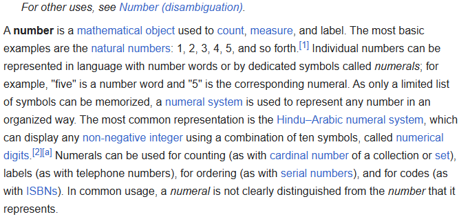

Pythagoras was right on π.
Irrational numbers aren't actually numbers.
Your Algebra I textbooks are lying. Irrational numbers are NOT Numbers. They do not fit the criteria of a number and therefore should never be considered as such.
What a number is
This isn't some argument where I have to redefine terms to prove what I am saying, this make's sense even in the context of what's established in modern mathematics. Let's look closely at what a number is: 
Based on what we just read above, a number has these properties: - Can be measured to measure (And otherwise measureable on itself) - Can be used to count and label - Quantfiable - has a specific place on the numberline
Irrationals unmasked
So, let's take a irrational such as Φ (With a approximated value of 1.618033987). Is this a number? Well irrationals are considered irrational because their non-terminating. The actual value of phi never truly ends. The actual value of phi and any non-terminating value is: ∞.
Hopefully you're getting at what I'm trying to explain. Infinity is certainly not a number and fits no part of the criteria we just learned about. It isn't measurable, quantifiable, or can be used to count. And, it certainly doesn't have a static place on the numberline. That is my argument in a nutshell.
"But, what about the approximation?"
If Irrationals aren't numbers to begin with, how did we get their approximation? Introducing, the R set!


 © 2025 Thomas E. (ThomasE.xyz)
© 2025 Thomas E. (ThomasE.xyz)